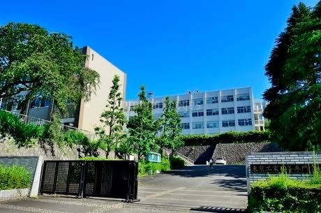

東京工業高等専門学校 機械工学科
トライボロジー研究室
Sato Group, Tribology Laboratory
ナノスケール界面の理解に基づき，摩擦・摩耗・潤滑現象の制御を目指す．
Understanding nanoscale interfaces to control friction, wear, and lubrication.
About 研究室概要
トライボロジー研究室では，摩擦・摩耗・潤滑現象を対象として，ナノスケールの界面計測から実用機械システムに関わる潤滑技術まで幅広く研究しています．原子間力顕微鏡を用いた固液界面計測，潤滑油添加剤による反応膜形成，トライボケミストリー，表面分析，摩擦試験を組み合わせ，機械システムの高効率化と長寿命化に資する基礎的知見の獲得を目指しています．
News お知らせ
-
論文
論文がアクセプト（e-axle 条件下の浸炭・ニトロ浸炭鋼）
「Fatigue Wear Mechanisms of Carburized and Nitrocarburized Steels under Simulated e-axle Conditions」がアクセプトされました。
-
学会
STLE Annual Meeting に参加（発表2件，Session Chair）
5月17日～21日，STLE Annual Meeting に参加し，口頭発表2件，Nanotribology セッションの Session Chair を務めました。
-
キャンパス
体育祭が6年ぶりにグラウンドで開催
5月13日，本校の体育祭が6年ぶりにグラウンドで開催されました。
-
受賞
日本機械学会 奨励賞（研究）を受賞
4月22日，日本機械学会より奨励賞（研究）を受賞しました。
-
研究室
トライボロジー研究室がスタートしました
公式ホームページを公開し，研究活動を本格化します。
-
メンバー
新しい本科5年生が研究室に配属されました
2026年度の本科5年生が配属され，卒業研究を開始します。